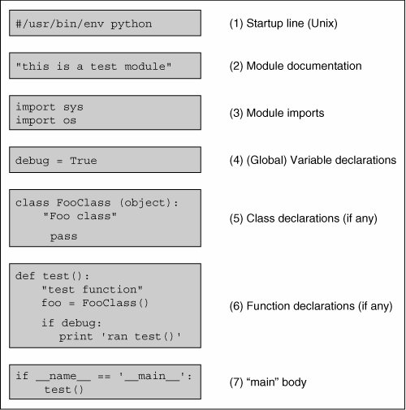

3.4. Basic Style GuidelinesComments You do not need to be reminded that comments are useful both to you and those who come after you. This is especially true for code that has been untouched by man (or woman) for a time (that means several months in software development time). Comments should not be absent, nor should there be novellas. Keep the comments explanatory, clear, short, and concise, but get them in there. In the end, it saves time and energy for everyone. Above all, make sure they stay accurate! Documentation Python also provides a mechanism whereby documentation strings can be retrieved dynamically through the __doc__ special variable. The first unassigned string in a module, class declaration, or function declaration can be accessed using the attribute obj.__doc__ where obj is the module, class, or function name. This works during runtime too! Indentation Since indentation plays a major role, you will have to decide on a spacing style that is easy to read as well as the least confusing. Common sense also plays a role in choosing how many spaces or columns to indent.
Four spaces is very popular, not to mention being the preferred choice of Python's creator. Five and six are not bad, but text editors usually do not use these settings, so they are not as commonly used. Three and seven are borderline cases. As far as tabs go, bear in mind that different text editors have different concepts of what tabs are. It is advised not to use tabs if your code will live and run on different systems or be accessed with different text editors. Choosing Identifier Names The concept of good judgment also applies in choosing logical identifier names. Decide on short yet meaningful identifiers for variables. Although variable length is no longer an issue with programming languages of today, it is still a good idea to keep name sizes reasonable length. The same applies for naming your modules (Python files). Python Style Guide(s)Guido van Rossum wrote up a Python Style Guide ages ago. It has since been replaced by no fewer than three PEPs: 7 (Style Guide for C Code), 8 (Style Guide for Python Code), and 257 (DocString Conventions). These PEPs are archived, maintained, and updated regularly. Over time, you will hear the term "Pythonic," which describes the Python way of writing code, organizing logic, and object behavior. Over more time, you will come to understand what that means. There is also another PEP, PEP 20, which lists the Zen of Python, starting you on your journey to discover what Pythonic really means. If you are not online and need to see this list, then use import this from your interpreter. Here are some links: www.python.org/doc/essays/styleguide.html www.python.org/dev/peps/pep-0007/ www.python.org/dev/peps/pep-0008/ www.python.org/dev/peps/pep-0020/ www.python.org/dev/peps/pep-0257/ 3.4.1. Module Structure and LayoutModules are simply physical ways of logically organizing all your Python code. Within each file, you should set up a consistent and easy-to-read structure. One such layout is the following: # (1) startup line (Unix) # (2) module documentation # (3) module imports # (4) variable declarations # (5) class declarations # (6) function declarations # (7) "main" body Figure 3-1 illustrates the internal structure of a typical module. Figure 3-1. Typical Python file structure
Core Style: "main" calls main( )
Most projects tend to consist of a single application and import any required modules. Thus it is important to bear in mind that most modules are created solely to be imported rather than to execute as scripts. We are more likely to create a Python library-style module whose sole purpose is to be imported by another module. After all, only one of the modulesthe one that houses the main applicationwill be executed, either by a user from the command line, by a batch or timed mechanism such as a Unix cron job, via a Web server call, or through a GUI callback. With that fact in hand, we should also remember that all modules have the ability to execute code. All Python statements in the highest level of codethat is, the lines that are not indentedwill be executed on import, whether desired or not. Because of this "feature," safer code is written such that everything is in a function except for the code that should be executed on an import of a module. Again, usually only the main application module has the bulk of the executable code at its highest level. All other imported modules will have very little on the outside, and everything in functions or classes. (See Core Note that follows for more information.) Core Note: __name__ indicates how module was loaded
3.4.2. Create Tests in the Main BodyFor good programmers and engineers, providing a test suite or harness for our entire application is the goal. Python simplifies this task particularly well for modules created solely for import. For these modules, you know that they would never be executed directly. Wouldn't it be nice if they were invoked to run code that puts that module through the test grinder? Would this be difficult to set up? Not really. The test software should run only when this file is executed directly, i.e., not when it is imported from another module, which is the usual case. Above and in the Core Note, we described how we can determine whether a module was imported or executed directly. We can take advantage of this mechanism by using the __name__ variable. If this module was called as a script, plug the test code right in there, perhaps as part of main() or test() (or whatever you decide to call your "second-level" piece of code) function, which is called only if this module is executed directly. The "tester" application for our code should be kept current along with any new test criteria and results, and it should run as often as the code is updated. These steps will help improve the robustness of our code, not to mention validating and verifying any new features or updates. Tests in the main body are an easy way to provide quick coverage of your code. The Python standard library also provides the unittest module, sometimes referred to as PyUnit, as a testing framework. Use of unittest is beyond the scope of this book, but it is something to consider when you need serious regression testing of a large system of components. |